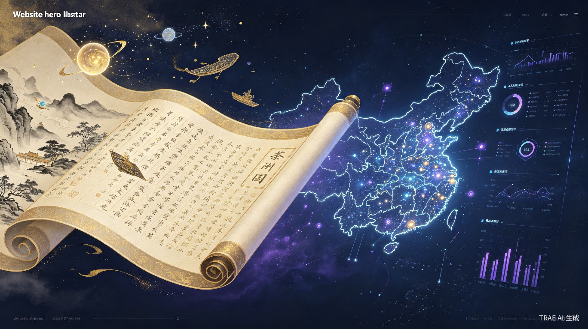
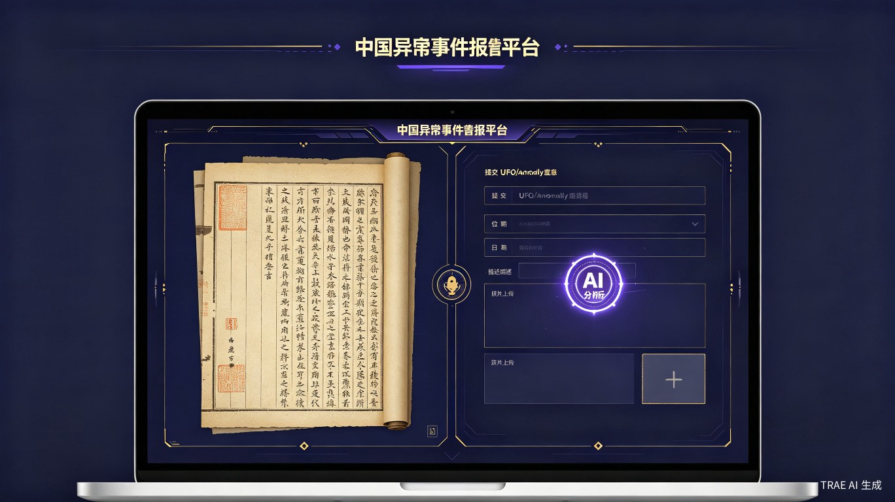
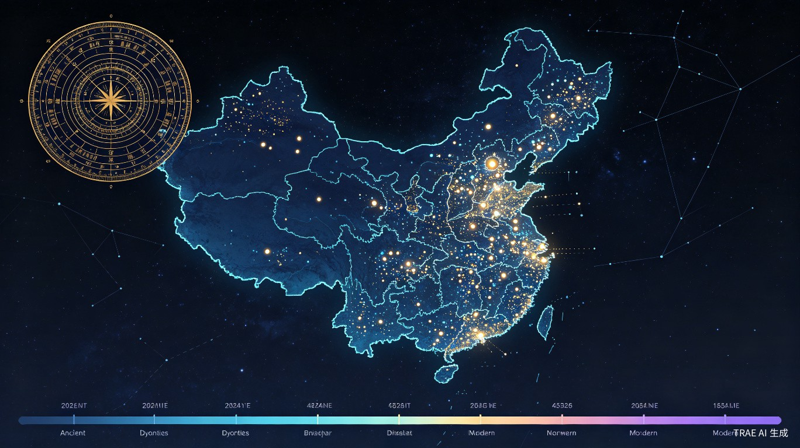

天异志
AI驱动的中国不明现象众包图谱平台
从《山海经》到UFO目击 —— 五千年不明现象，一网打尽
01 问题与痛点
中国拥有五千年志异文化，从《山海经》《搜神记》《太平广记》到现代UFO目击事件，这些记录本身就是一座未被挖掘的文化与数据金矿。但至今没有一个结构化的、可交互的、AI驱动的数字化平台来系统收录、分析、展示这些现象。
古籍散落
200余部志异文献中的不明现象记录分散各处，无法检索、无法分析、无法与现代事件关联
目击无处投稿
现代不明现象目击事件只在论坛/贴吧碎片化传播，缺乏结构化记录和AI分析能力
无AI分析
现有平台只是内容搬运站，无法提供现象分类、可信度评分、历史匹配等智能分析
无时空可视化
无法直观看到某地区、某朝代的现象分布和演变趋势，古今完全割裂
"美国政府近年大胆公开UFO档案并鼓励民间讨论，而中国对不明现象长期处于'不可谈'的沉默状态。但随着AI时代的到来，信息壁垒正在被打破。"
—— 不是不可谈，而是缺一个科学的、开放的、AI赋能的谈论平台
02 解决方案
天异志是一个Web网站 + 移动端H5的AI驱动众包平台，核心工作流：
古今双轨体系
AI从200+部中国古典志异文献中自动提取结构化记录，与用户众包的现代事件在同一个时空地图上交汇，形成5000年完整的"不明现象时间线"。
古籍中的"夜有光""异物自天降"等记载，将与现代UFO目击、异常天象在同一平台上对话。


交互式"天异地图"
中国地图热力图可视化展示所有不明现象的地理分布。支持按朝代/年代筛选，观看"现象迁移"动画。
点击任意事件点可查看详情、AI分析、相似事件、讨论区。古代罗盘与现代数据在一张图上交汇。
03 五大核心创新
古今双轨体系 —— 全球首创
AI从200+部中国古典志异文献中自动提取结构化记录，与用户众包的现代事件在同一个时空地图上交汇，形成5000年完整"不明现象时间线"。古籍与现代不再割裂。
AI现象分析引擎 —— 不只是搬运
自动分类（光学/声学/生物/地质/气象等）、可信度评分、相似历史事件匹配、谣言/误识别过滤（结合天文/气象/航空数据）。每条投稿都获得AI的深度分析报告。
交互式"天异地图" —— 现象热力图
中国地图热力图可视化，支持按朝代/年代筛选，观看"现象迁移"动画。点击事件点查看详情与AI分析，直观感受五千年异常现象的地理分布演变。
众包验证机制 —— 民间智库
多人独立投稿同一事件自动关联合并、可信度升级。同一地点、同一时间的多独立来源投稿，系统自动关联形成"现场证人"认证，构建可信记录体系。
文化再创造引擎 —— 从记录到创作
AI基于真实事件一键生成志异风格短文、科普解读、播客/短视频脚本。每月自动生成「天异月报」数据可视化报告，开放API供创作者使用。
04 数据洞察
基于模拟数据展示平台核心分析能力：
05 目标用户
不明现象爱好者
UFO/未解之谜/志异文化的关注者，渴望一个系统化的信息平台
科普内容创作者
需要真实事件素材进行创作（短视频、播客、文章）
志异文化研究者
学者、学生，需要结构化的古籍志异数据
普通好奇用户
目击不明现象后想记录、求证、获得AI分析反馈
使用场景
| 场景 | 用户行为 | 平台价值 |
|---|---|---|
| 目击记录 | 目击不明飞行物后，立即打开平台记录并上传证据 | AI即时分析，给出分类和可信度评估 |
| 历史研究 | 研究某地历史志异传说，查看区域古今现象分布 | 时空地图+古今对照，发现文化脉络 |
| 内容创作 | 创作灵异/科幻内容，获取真实事件素材 | AI一键生成创作脚本和志异风格短文 |
| 日常探索 | 闲暇时浏览"天异月报" | 了解本月新收录现象和AI分析报告 |
06 价值与意义
填补文化空白
首次系统化数字化中国5000年志异文化，将碎片化的古籍记载变为结构化可分析的数据资产
推动理性探索
以AI辅助分析替代"不可谈"的沉默，为公众提供科学、开放的不明现象记录与讨论平台
文化传承创新
让古籍中的志异记载通过AI技术"活"起来，与现代事件形成跨时空对话
技术创新示范
展示AI在文化古籍挖掘、多模态内容分析、众包数据治理方面的创新应用